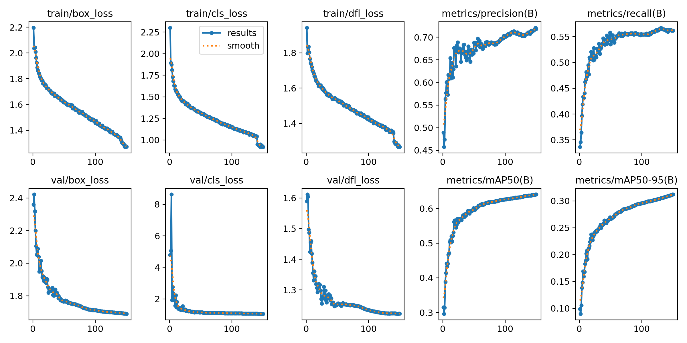

AFB detection
The model identifies candidate acid-fast bacilli and returns bounding boxes with confidence scores.
DIGITAL MICROSCOPY · DEEP LEARNING
A YOLOv8n deep-learning model trained on labelled Ziehl–Neelsen microscopy images to locate candidate acid-fast bacilli (AFB). It supports direct image analysis and tiled inference for large images and whole-slide workflows.
FEATURES
The model identifies candidate acid-fast bacilli and returns bounding boxes with confidence scores.
Tiled processing handles large microscopy images and whole-slide imaging workflows without loading an entire slide into memory.
Overlapping tiles improve edge coverage, while global non-maximum suppression consolidates repeated boundary detections.
Use common raster microscopy images directly or process supported slide formats with the OpenSlide workflow.
Run the supplied checkpoint from the command line with configurable confidence and image-calibration options.
A FastAPI service and browser interface support local image review and annotation workflows.
Built with PyTorch, Ultralytics YOLO, OpenCV, OpenSlide, and FastAPI for local research use.
The included best.pt checkpoint can be verified with its SHA-256 sidecar before local use.
WORKFLOW
The system separates image loading, deep-learning inference, post-processing, and review so each step remains clear and reusable.
Provide a raster Ziehl–Neelsen microscopy image or a supported whole-slide image.
Large images are divided into overlapping tiles to preserve detail and control memory use.
The single-class detector predicts candidate AFB bounding boxes and confidence scores.
Global non-maximum suppression removes duplicate predictions from overlapping tiles.
Inspect the image, locations, and confidence outputs in the CLI or local web interface.
THE MODEL
The released model is a deep-learning object detector trained for 150 epochs on labelled Ziehl–Neelsen microscopy imagery. It predicts the location of visual AFB candidates; each prediction includes a bounding box and confidence score.
| Item | Description |
|---|---|
| Architecture | Ultralytics YOLOv8n |
| Task | Single-class object detection |
| Target class | Candidate acid-fast bacillus (AFB) |
| Training duration | 150 epochs |
| Model artifact | 03_MODELS/best.pt |
RECORDED DEVELOPMENT OUTPUTS

ARCHITECTURE
QUICK START
Install the project requirements, then pass the included checkpoint and a local microscopy image to the inference command.
git clone https://github.com/abusuraihsakhri/pretrained-tb-afb-detection-model.git
cd pretrained-tb-afb-detection-model
python -m pip install -r requirements.txt
python 02_CODE/scripts/04_inference.py --model 03_MODELS/best.pt --wsi path/to/microscopy-image.png --conf 0.25LIMITATIONS
OPEN SOURCE
The repository includes the model artifact, inference scripts, large-image processing, a local API, and a browser-based review interface. Use it as a transparent foundation for microscopy research and local method development.